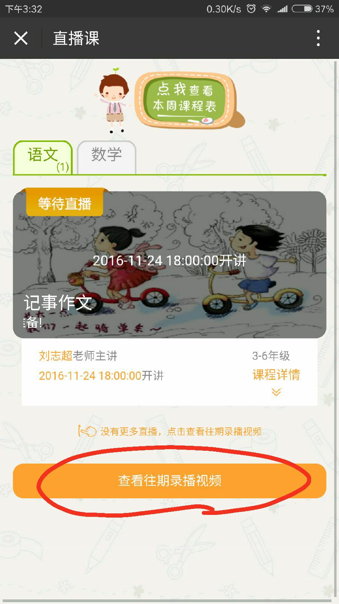
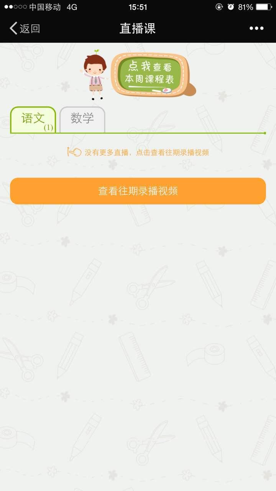
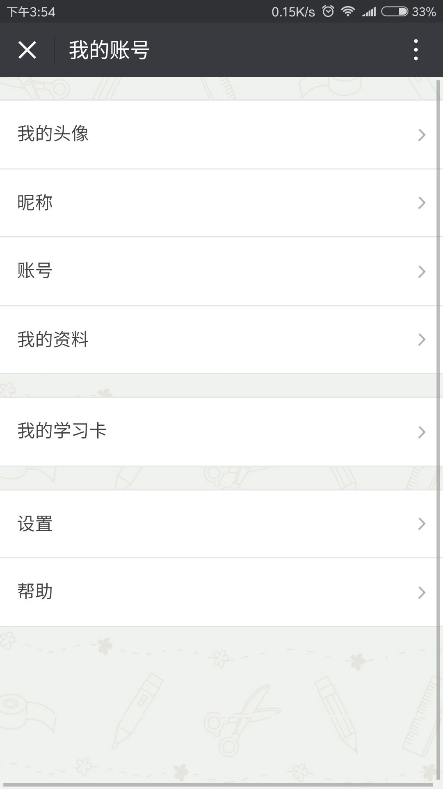
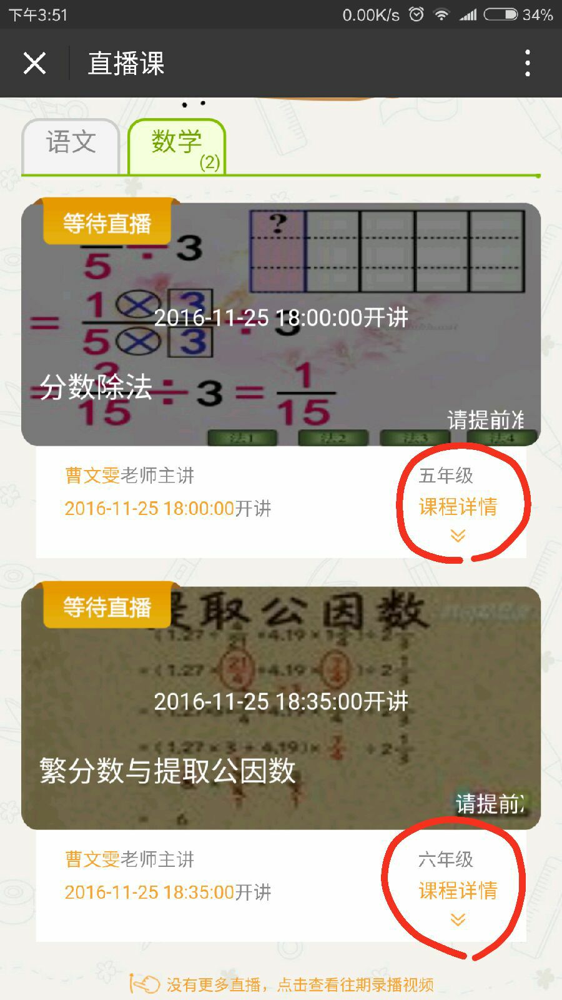

| 1.什么时候开始直播？ |
| 小雨直播的时间一般是安排在每周1-周5 “18:00” 开始 。具体课程的准确时间请注意查看课表。 |
| 2.怎么找课表？ |
| 进入小雨知时微信站“公告”菜单，可以看到本周的课表。可以查看历史消息，也会有课表。 |
| 3.怎么回看直播课录播课程？ |
| 进入小雨知时微信站“直播”菜单，根据需要观看语文和数学的回放课程。 |
|  |
| 4.怎么注册卡？ |
| 小雨知时微信站“我的”菜单里面进行卡激活操作。 |
| 5.金豆有什么用？ |
| 小雨平台的金豆是用来在小雨知识平台上进行消费的代金币。 当前小雨知时网站还处在试播阶段。所有项目都免费。 但不久的将来，直播、录播和资料都需要使用金豆资源。请您妥善管理好自己的直播卡，尽快到小雨知时微信站“我的”菜单里面进行卡激活操作。 |
| 6.卡丢了怎么办？ |
| 请向小雨客服提供 “身份证号”、“联系人和手机”、“所购图书的照片”，小雨客服会履行相关补办手续。 |
| 7.手机无法看直播？ |
| 目前针对IOS低于9的版本，会导致一些特殊情况。比如：无法卡注册、无法正常看直播等。 |
|   |
| 8.直播课分年级吗？ |
| 直播语文分“低年级“和”高年级”。低年级主要适合1-3年级的小朋友看；高年级主要适合4-6年级的小朋友看。 |
|  |
| 9.在哪里买书？ |
| 请在淘宝店里搜索 “ 铮铮书屋 ”，购买直播语文、直播数学等相关书籍。 |
| 10.在那里做作文投稿？ |
| 以登录 “中国少年作家班”官网， www.snzjb.org 每月征文投稿。 |